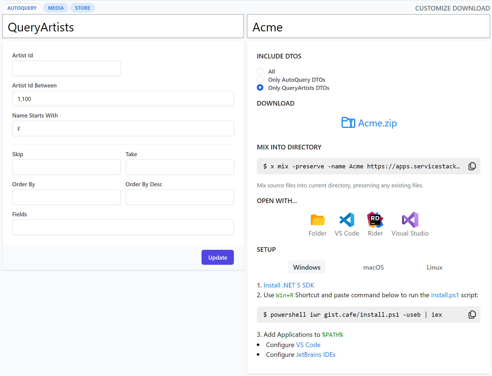
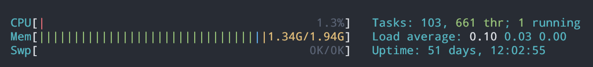
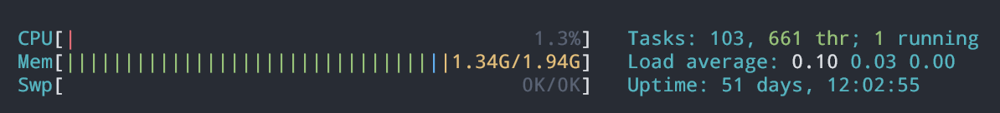
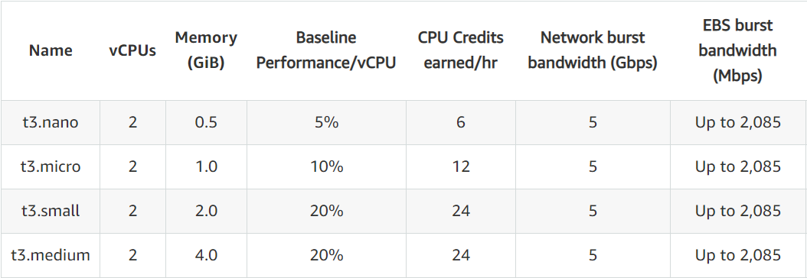
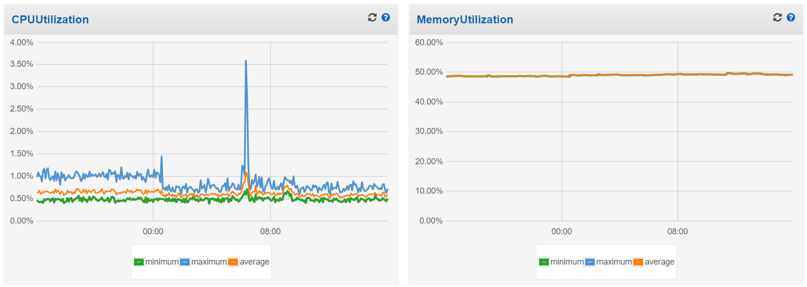
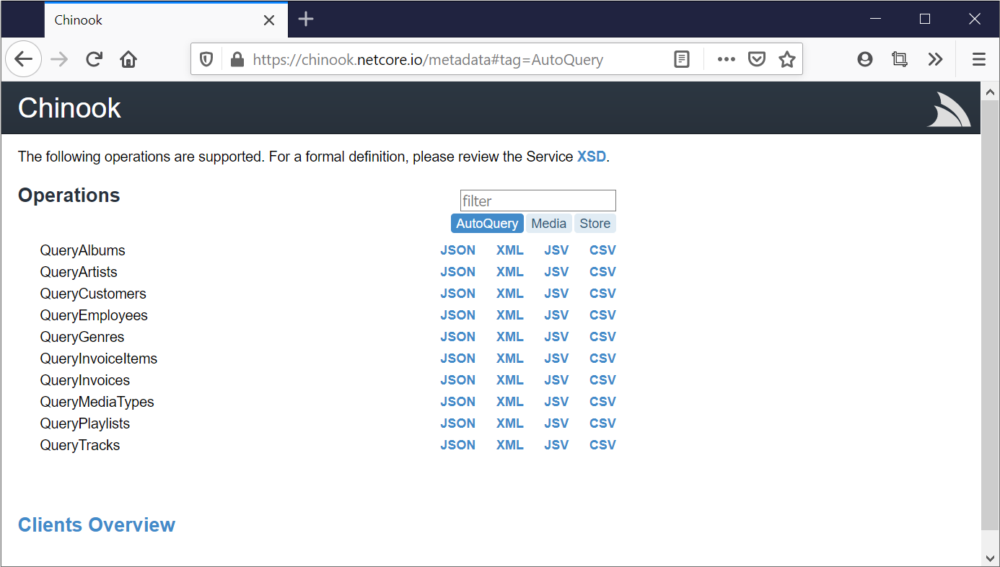

A nice aspect of the flagship features in this release is that they build upon ServiceStack's existing unique capabilities to enable even higher value-added features:
To capture the unprecedented productivity unlocked by this release we've created a video showing how much is possible in a few minutes with ServiceStack, starting from just an existing RDBMS:
This video walks through creating a new GitHub project with an empty web project from scratch, then:
- Uses AutoGen to create high-performance AutoQuery & CRUD APIs over the entire Chinook RDBMS
- Query RDBMS Tables using implicit AutoQuery conventions
- Convert AutoGen Services into code-first Services
- Use the synthesized code-base to create a new Artist, Album & Track from a remote typed client
- Extend AutoQuery Services with typed API Filters
- Mix in GitHub Actions Template for deploying docker-compose containers to a new Digital Ocean $5/month Droplet
- Create a GitHub release to automate deployment to our new Droplet
- Open deployed App in ServiceStack Studio and use its Instant UI to query & create Artists & Albums
- Open deployed App in Instant Client Apps to craft a C# API from an Auto UI
This guide is documented every step of the way, follow along to unlock these timeless productivity features for yourself!
Use AutoGen to instantly generate AutoQuery APIs for your RDBMS
We encourage you to try out the magical AutoGen feature on your own internal RDBMS for the fastest way to enter the productive the world of AutoQuery which lets you instantly generate high-performance AutoQuery & CRUD APIs around your RDBMS Tables, view them in ServiceStack Studio's Auto UI and make use of Instant Client Apps to bootstrap a new Web, Mobile or Desktop Client App.
Auto UI in ServiceStack Studio
If you're not familiar with ServiceStack Studio yet we've created a new guided tour highlight video focusing on how AutoQuery services can help developers and non-developers alike get Instant UI access their Systems data.
ServiceStack Studio can be used for rapid prototyping or as a generic UI to manage services, data, users, permissions and validation. Studio has acquired a number of capabilities & features already that we've tried to highlight in this feature video:
Value of APIs
A primary goal for ServiceStack is to capture your systems functionality in a typed Service contract that yields the most reusable & evolvable API design. It's why ServiceStack encourages a contract-first, message-based & coarse-grained typed API Design, which not only benefits the evolution of your Service APIs behind its most reusable form, but also benefits ServiceStack who's able to maximize the utility of your Services and make it available in multiple endpoints (e.g. HTTP,MQ,gRPC,SOAP,Service & RPC Gateway), call styles & serialization formats, more than any other Services framework.
The other side of the API boundary is the other important area where APIs can add the most value by making it as simple as possible for API Consumers to call your APIs thereby making your APIs more appealing and creating multiplicative value with the time & effort saved by each API consumer.
Optimal end-to-end development UX
Providing the best end-to-end API development UX is where ServiceStack has excelled for over a decade where it's still one of the only solutions allowing for an optimal end-to-end API without code-gen, which it enables for multiple generic .NET Service Clients in multiple text & binary formats all implementing the same substitutable interfaces. This ability is a consequence of design in capturing your entire API boundary into perfectly symmetrical impl-free Service Contracts where the same DTOs Services implement on the Server are also what clients use to invoke APIs.
The benefit afforded from this design extends to each of the popular Web, Mobile & Desktop Add ServiceStack Reference languages ServiceStack natively supports, as they only need be concerned with generating impl-free, declarative DTO Service Contracts in each language. This results in much richer DTOs whose code generation also captures exported interfaces & declarative route information, API metadata & Validation attributes in languages that support it as well as exporting more optimal & specific types as it's able to translate types directly from .NET's richer type system instead of the more restrictive primitive data types set found in other generic code-gen solutions.
The benefits for only needing to generate DTOs is multifold, there's less boilerplate code to generate, the models are richer, cleaner and more reusable as POCO data models within client applications. They also can used within smart generic Service Clients that maintains higher-level functionality beyond a generic HTTP Client with built-in support for Authentication, Auto Retries, Auto Batched Requests, Stateful Cookie Sessions, etc. wrapped behind a consistent and idiomatic generic client interface.
Instant Client Apps
Building upon our native end-to-end typed solutions, we're excited to announce Instant Client Apps to provide instant utility and value around your ServiceStack Services where your API consumers can use the Auto generated UI to craft API Requests in their preferred programming language:

Customize Download
A benefit to owning the entire code-generation technology stack is being able to control the complete end-user
development experience and provide richer more customizable features like choosing to download all API DTOs,
only DTOs defined within a tag group for Systems that group their APIs into
targeted collections (e.g. [web],[mobile],[desktop]) whilst users who are only interested in only calling 1 API
can download just that single Request DTO (inc. all its dependencies) for a much smaller & more tailored download.

Download .zip
Instant Client Apps also caters for users that prefer not to install any software who can download a .zip of their Client App pre-configured with their ProjectName that they can unzip and run in their preferred dev environment that way.
Open Instantly in preferred IDE
At its most productive, API Users who've installed our cross-platform utility will be able to instantly open their crafted API directly in their preferred IDE. The previously time & effort intensive task for users to setup a new development environment to be able to explore your API in their preferred language and IDE is now reduced to seconds.
Mix into an existing code-base
Another popular use-case that's catered for is being able to non-destructively mix the client App source files directly into existing code bases, preserving any existing files.
This is also useful for Client Applications that need to start from an existing scaffolded project template like incorporating their client Dart App into a new Flutter Mobile App as seen in this video:
Share Executable API Examples
A nice feature of Instant Client Apps is that each custom API Example compiles down into a single URL which can be easily shared, linked to and embedded in Docs & Emails. E.g. You can view the Typed Chinook AutoQuery API Example used in the video and docs from the link below:
Which captures the remote ServiceStack BaseUrl, the C# Language to view the example in, the selected AutoQuery Tag Group, the QueryArtists Request DTO being queried and all its populated properties.
Embed API Examples to create Interactive API Docs
A richer experience you can offer your API Consumers beyond sharing links to API Examples is being able to generate interactive API docs around your APIs.
To further this goal apps.servicestack.net also lets you capture API Examples into embeddable iframes that you can embed into your API Docs, e.g:

For a quick preview of this we've created an API Docs example site around the Covid Vaccines APIs used in the Instant Client Apps Flutter Demo above:
servicestackapps.github.io/CovidVaccinationWatch/
Here we show an example of skinning the embeddable API Docs inside of our own jQuery UI Tab plugins widget that is then embedded inside the API docs pages.
Being able to quickly and effortlessly generate beautiful API docs is an area we want to explore more in future. We don't believe trying to mechanically automate API docs generation is going to result in the best API docs for your end users, instead we envisage it should end up being a mix of static documentation around interactive code examples where you have full flexibility in how its presented to the end user. But it should be something we can provide tools to help scaffold a static site around interactive code examples that they'll be able to open with a single click directly in their IDE.
Synthesize API Code Examples
A side-effect of Instant Client Apps being stateless is that they require your API to always be accessible as it uses its API metadata and Server Generated DTOs in order to generate the Client App Source files. It does maintain a short cache of both in order to provide a responsive UX, but otherwise your API needs to be live which is potentially an undesirable trait for API docs that you want users to still be able to read whilst your API is down or undergoing maintenance.
However this is easy enough to workaround by synthesizing the dynamic source files and publishing them to an immutable
gist. To do this you can either download & extract MyApp.zip or copy the MIX INTO DIRECTORY script to write all
the files into a new folder which you can then publish to a gist with the x publish command:
$ x publish -desc "Chinook Query Artists Example"
This will create a gist under your GitHub account and print both the link to your GitHub Gist and viewing it in gist.cafe:
published to: https://gist.github.com/gistlyn/d3a0dfcd0851d928badad66b90affc06
view in: https://gist.cafe/d3a0dfcd0851d928badad66b90affc06
Going to gist.cafe will let you further customize the embeddable code example and provide
multiple embed options, e.g. you can simply replace the gist id in the <script/> tag below:
<script src="https://gist.cafe/embed/d3a0dfcd0851d928badad66b90affc06.js"></script>
To publish gists you'll need to generate a GitHub Access Token with gist scope and add it to your
GITHUB_TOKENEnvironment Variable.
JWT Refresh Token Cookies
JWT now includes first-class support for Refresh Token Cookies which is implicitly enabled when configuring the
JwtAuthProvider to use Cookies:
Plugins.Add(new AuthFeature(() => new AuthUserSession(),
new IAuthProvider[] {
new JwtAuthProvider {
UseTokenCookie = true,
},
}));
Which upon authentication will return the Refresh Token in a ss-reftok Secure, HttpOnly Cookie alongside
the Users stateless Authenticated UserSession in the JWT ss-tok Cookie.
The benefit of maintaining smart, generic Service Clients for all Add ServiceStack Reference languages is being able to provide a nicer (i.e. maintenance-free) development experience with all Service Clients now including built-in support for Refresh Token Cookies where they’ll automatically fetch new JWT Bearer Tokens & transparently Auto Retry Requests on 401 Unauthorized responses.
Configuring to use JWT with UseTokenCookie transparently switches clients from using Server session-based
Authentication to stateless JWT Auth Tokens that, without additional effort or machinery, will be able to make
use of Refresh Token Cookies to re-validate & fetch new JWT Bearer Tokens behind the scenes.
Seeing how to make authenticated Typed API Requests in each language is a good illustration of ServiceStack's consistent familiar development model enabled by the idiomatic generic Service Clients available to each supported programming language:
C#, F# & VB .NET Service Clients
var client = new JsonServiceClient(baseUrl);
var authRequest = new Authenticate {
provider = "credentials",
UserName = userName,
Password = password,
};
var authResponse = client.Post(authRequest);
//client.GetTokenCookie(); // JWT Bearer Token
//client.GetRefreshTokenCookie(); // JWT Refresh Token
// When no longer valid, Auto Refreshes JWT Bearer Token using Refresh Token Cookie
var response = client.Post(new SecureRequest { Name = "World" });
Inspect.printDump(response); // print API Response into human-readable format (alias: `response.PrintDump()`)
TypeScript & JS Service Client
let client = new JsonServiceClient(baseUrl);
let authRequest = new Authenticate({ provider:"credentials", userName, password });
let authResponse = await client.post(authRequest);
// In Browser can't read "HttpOnly" Token Cookies by design, In Node.js can access client.cookies
// When no longer valid, Auto Refreshes JWT Bearer Token using Refresh Token Cookie
let response = await client.post(new SecureRequest({ name: "World" }));
Inspect.printDump(response); // print API Response into human-readable format
Dart Service Clients
var client = new JsonServiceClient(baseUrl);
var authRequest = Authenticate(provider:"credentials", userName:userName, password:password);
var authResponse = await client.post(authRequest)
//client.getTokenCookie() // JWT Bearer Token
//client.getRefreshTokenCookie() // JWT Refresh Token
// When no longer valid, Auto Refreshes JWT Bearer Token using Refresh Token Cookie
var response = await client.post(SecureRequest(name:"World"));
Inspect.printDump(response); // print API Response into human-readable format
Java Service Clients
JsonServiceClient client = new JsonServiceClient(baseUrl);
Authenticate authRequest = new Authenticate()
.setProvider("credentials")
.setUserName(userName)
.setPassword(password));
AuthenticateResponse authResponse = client.post(authRequest);
//client.getTokenCookie(); // JWT Bearer Token
//client.getRefreshTokenCookie(); // JWT Refresh Token
// When no longer valid, Auto Refreshes JWT Bearer Token using Refresh Token Cookie
SecureResponse response = client.post(new SecureRequest().setName("World"));
Inspect.printDump(response); // print API Response into human-readable format
Kotlin Service Clients
val client = new JsonServiceClient(baseUrl)
val authResponse = client.post(Authenticate().apply {
provider = "credentials"
userName = userName
password = password
})
//client.tokenCookie // JWT Bearer Token
//client.refreshTokenCookie // JWT Refresh Token
// When no longer valid, Auto Refreshes JWT Bearer Token using Refresh Token Cookie
val response = client.post(SecureRequest().apply {
name = "World"
})
Inspect.printDump(response) // print API Response into human-readable format
Swift Service Client
let client = JsonServiceClient(baseUrl: baseUrl);
let authRequest = Authenticate()
authRequest.provider = "credentials"
authRequest.userName = userName
authRequest.password = password
let authResponse = try client.post(authRequest)
//client.getTokenCookie() // JWT Bearer Token
//client.getRefreshTokenCookie() // JWT Refresh Token
// When no longer valid, Auto Refreshes JWT Bearer Token using Refresh Token Cookie
let request = SecureRequest()
request.name = "World"
let response = try client.post(request)
Inspect.printDump(response) // print API Response into human-readable format
Built-in Inspect Utils
Each client library also includes Inspect utils for being able to quickly dump typed API Responses in a human-friendly view for immediate inspection:
class Inspect {
// Dump object graphs into a human-readable format
static dump(obj: any): string;
static printDump(obj: any): void;
// Dump tabular results into a human-readable ascii (GitHub Flavored) markdown table
static dumpTable(rows: any[]): string;
static printDumpTable(rows: any[]): void;
// If INSPECT_VARS configured, serializes object for inspection after run, e.g. in https://gist.cafe
static vars(obj: any): void;
}
Example Usage:
var response = await client.send(request)
Inspect.printDump(response)
Or dump a markdown table for quickly visualizing a list of tabular results:
Inspect.printDumpTable(response.results)
GitHubAction Templates

We've begun to fully embrace GitHub Actions from this release to help quickly setting up CI environments for new and existing ServiceStack project templates by automating them into building and running tests on each commit before publishing, dockerizing & deploying them on each GitHub Release. The templates leverage mix to work like lego pieces where they can be combined to achieve your preferred automation workflow.
To start off with the initial templates are focused on enabling the most cost effective deployment scenarios for deploying .NET 5 Apps to a single target host. Here's a list of the initial GitHub Action templates along with the scenarios they enable:
- (
build) Build & Run Tests on each commit - Deploying to any Vanilla Linux Host via SSH on each new GitHub Release
- (
release-ghr-vanilla) Publishing Docker App to GitHub Container Registry - (
release-hub-vanilla) Publishing Docker App to Docker Hub - (
release-ecr-vanilla) Publishing Docker App to Amazon Elastic Container Registry
- (
- Deploying to AWS EC2 Instance via ECS on each new GitHub Release
- (
release-ecr-aws) Publishing Docker App to Amazon Elastic Container Registry
- (
The build template is a generic GitHub Workflow that all project templates can use to build the solution and
run its tests on each commit. They can be combined with the release templates using the naming convention of
release-{docker_image_repo}-{host_type} to cater for different workflows with multiple provider options.
E.g. our Chinook Deployment video guide and docs
enabled its GitHub Actions automated deployments by mixing in build and release-ghr-vanilla templates:
$ x mix build release-ghr-vanilla
For maximum utility and simplified automation the Release Workflows follows a pattern for packaging your published .NET 5 App into a Docker container, publishing it to your preferred Docker Image Repository before being deployed as part of a customizable docker-compose template for maximum flexibility in deploying your App with its infrastructure dependencies.
.NET 5 Web Projects Templates now includes Dockerfile
In conjunction with the GitHub Action Templates for deployments all .NET 5 Web Project templates include a
Dockerfile which know how to build itself making it generically useful for packaging your App into a
portable Docker image suitable for deployment to a large number of hosting providers that support various container
hosting options.
Existing ServiceStack Projects can use x mix to download the Dockerfile for ServiceStack's
Single Page App Project Templates that utilize npm:
$ x mix docker-dotnet-spa
Other Project Templates utilizing ServiceStack's standard multi-project physical structure can instead download:
$ x mix docker-dotnet
Cost Effective Deployment Templates
The initial Action templates are focused on cost effective hosting solutions where multiple .NET 5 Apps across multiple GitHub repositories can be conveniently deployed to a single shared server - ideal for hosting multiple small Apps.
To get an idea of the cost effectiveness of deploying and densely packing multiple .NET 5 Apps in a single host we've converted our new & existing Live Demos and Project Templates to be deployed with these new GitHub workflows:
20x Starting Project Templates deployed to Digital Ocean
All .NET Core Project Templates Live Demos have been deployed to a $10/month Digital Ocean Droplet:

Which is currently running 22 Docker Containers: 20 .NET 5 Apps + 2x Nginx/Nginx LetsEncrypt Docker Containers that handles the auto registration, reverse proxying, SSL terminations & load-balanced rotations of Docker Web Apps as well as the auto registration & renewals of LetsEncrypt SSL Certificates.
The last 7 days CPU Usage chart shows it comfortably running below 5% CPU Usage and currently using 1.34G RAM (69%):
 

Thanks to predictable pricing of Digital Ocean Droplets we can calculate the cost of hosting each Web App:
$0.50 per .NET 5 Docker App /month
10x .NET Live Demos deployed to AWS ECS
10x of our .NET 5 Live Demos has been deployed using release-ecr-aws
to a 2x vCPU, 4GB RAM t3.medium instance:

The instance is running a total of 15x Docker Containers: 10x .NET 5 Apps, 2x Redis, 2x Nginx companion containers and 1x AWS ECS agent which is idling around 1% CPU and just under 50% RAM usage:

This t3.medium instance costs $411 over a 3-Year term, averaging $11.42 /month:

Total hosting costs are more unpredictable on the cloud which incur additional variable costs like bandwidth and storage but they're currently only a marginal expense on our low traffic Live Demos where total hosting cost is just over:
$1.42 per .NET 5 Docker App /month
GitHub Action Templates Video Guides
We've created video guides to help walk through the entire process from creating a new project template, setting up your deployment server, configuring your App's DNS and deployment configuration and creating a new GitHub Release to initiate App deployments.
GitHub Container Registry deployed to a Linux server via SSH
The first GitHub Actions Template we'll look at is release-ghr-vanilla which uses GitHub's own Container Repository
(ghcr.io) to deploy to a standalone "Vanilla" Linux server that can host multiple .NET Apps.
GitHub Actions deploys to this stand alone Linux server via SSH and an nginx-proxy container along with a
LetsEncrypt companion container that takes care of registration & renewal of SSL Certs.
Please also refer to the documented guide when setting up your own project deployments for the first time.
There are two other variations on this template for using alternative Docker Image Repositories:
release-hub-vanilla- Docker Hub Container Repositoryrelease-ecr-vanilla- AWS Elastic Container Repository
AWS ECS without an Application Load Balancer (ALB)
If you're invested in AWS platform we've also created a video guide for the release-ecr-aws GitHub Actions Template
that uses AWS ECS (EC2 Container Service) to handle deployments to a single EC2 server with Nginx Docker
Containers handling the reverse proxying and managing the LetsEncrypt SSL Certs.
This is a cost effective way to get multiple Apps deployed using ECS by avoiding ALB costs for non-scale out solutions that only need to run on a single instance.
Please follow the written tutorial for more details on how the templates work and setting up the required AWS configuration.
The GitHub Action Template can also serve as a starting point to modify it to support the more traditional and robust ECS setup utilizing an ALB to support high availability and horizontal scaling.
In future we'll look at creating GitHub Action templates that scale out with cloud vendor offerings
Postman v2 Collections
An alternative popular UI used to access HTTP APIs is Postman which has seen its support improved thanks to Michael Rall who's contributed support for Postman v2.1 collections.
It's currently being delivered as a source based plugin that can be enabled in all Modular ServiceStack Apps with:
$ x mix postman2
To provide yet another way to access your ServiceStack APIs, e.g:

All Service Client Libraries Upgraded
In addition to the Refresh Token support & built-in Inspect utils all ServiceStack's generic Service Client libraries in all languages have received a number of updates to improve their consistency and overall development UX.
.NET DTO Type Converters
To provide a consistent dev UX around .NET Interop all client libraries include consistently named utility methods to convert to/from a language's native Types and .NET DTO Types which can be used outside of Service Clients, e.g. in a platforms general purpose HTTP Clients:
Swift
ServiceStack.Swift top-level utility functions:
func fromDateTime(_ jsonDate:String) -> Date?- From .NET DateTime (WCF JSON or ISO Date) to Swift Datefunc toDateTime(_ dateTime:Date) -> String- From Swift Date to .NET DateTime (WCF JSON Date)func fromTimeSpan(timeSpan:String) -> TimeInterval?- From .NET TimeSpan (XSD Duration) to Swift TimeIntervalfunc toTimeSpan(timeInterval:TimeInterval) -> String- From Swift TimeInterval to .NET TimeSpan (XSD Duration)func fromByteArray(_ base64String:String) -> [UInt8]- From .NET byte[] (Base64 String) to Swift [UInt8]func toByteArray(_ bytes:[UInt8]) -> String- From Swift [UInt8] to .NET byte[] (Base64 String)func fromGuid(_ guid:String) -> String- From .NET Guid to Guid stringfunc fromByteArray(_ base64String:String) -> [UInt8]- From Guid string to .NET Guid
Dart (VM / Flutter & Web)
servicestack Dart library top-level utility functions:
DateTime fromDateTime(String jsonDate)- From .NET DateTime (WCF JSON or ISO Date) to Dart DateTimeString toDateTime(DateTime dateTime)- From Dart DateTime to .NET DateTime (WCF JSON Date)Duration fromTimeSpan(String str)- From .NET TimeSpan (XSD Duration) to Dart DurationString toTimeSpan(Duration duration)- From Dart Duration to .NET TimeSpan (XSD Duration)Uint8List fromByteArray(String base64String)- From .NET byte[] (Base64 String) to Dart Uint8ListString toByteArray(Uint8List bytes)- From Dart Uint8List to .NET byte[] (Base64 String)String fromGuid(String guid)- From .NET Guid to Guid stringString toGuid(String guid)- From Guid string to .NET Guid
Java / Kotlin (JVM & Android)
ServiceStack.Java defines their DTO conversion functions
as static helpers on Utils.* class:
Date fromDateTime(String jsonDate)- From .NET DateTime (WCF JSON or ISO Date) to JVM DateString toDateTime(Date date)- From JVM Date to .NET DateTime (WCF JSON Date)TimeSpan fromTimeSpan(String xsdDuration)- From .NET TimeSpan (XSD Duration) to Java TimeSpanString toTimeSpan(TimeSpan timeSpan)- From Java TimeSpan to .NET TimeSpan (XSD Duration)UUID fromGuid(String guid)- From .NET Guid to JVM UUIDString toGuid(UUID uuid)- From JVM UUID to .NET Guidbyte[] fromByteArray(String base64)- From .NET byte[] (Base64 String) to JVM signed byte[]String toByteArray(byte[] bytes)- From JVM signed byte[] to .NET byte[] (Base64 String)
TypeScript (Web & Node.js)
@servicestack/client libraries top-level DTO Type conversion functions:
function fromDateTime(dateTime: string): Date;
function toDateTime(date: Date): string;
function fromTimeSpan(xsdDuration: string): string;
function toTimeSpan(xsdDuration: string): string;
function fromGuid(xsdDuration: string): string;
function toGuid(xsdDuration: string): string;
function fromByteArray(base64: string): Uint8Array;
function toByteArray(bytes: Uint8Array): string;
function toBase64String(source: string): string;
Swift library rewritten to use Codable Types
The ServiceStack.Swift client library has been rewritten to conform to Apple's standardized Swift's Codable Types whose built-in compiler support results in much cleaner and more reusable DTOs that can be reused as data models throughout your App, saved and loaded with Swift's built-in Serializers and interoperate with other 3rd party libraries that also support Codable models.
Codable DTOs
By default ServiceStack now generates clean "implementation-free" Codable DTOs for all general Types supported by Swift's compiler, e.g:
// @Route("/posts/{Id}", "GET")
public class GetPost : IReturn, IGet, Codable
{
public typealias Return = GetPostResponse
public var id:Int?
public var include:String?
required public init(){}
}
It also supports auto generating Codable implementations for Types that Swift's compiler doesn't support default
Codable implementations, namely inherited Types & types with self references.
This limitation includes all AutoQuery DTOs since they inherit from QueryDb<T>, where they'll have their Codable
implementation generated with their DTO, e.g:
// @Route("/customers", "GET")
// @Route("/customers/{CustomerId}", "GET")
public class QueryCustomers : QueryDb<Customers>, IReturn, IGet
{
public typealias Return = QueryResponse<Customers>
public var customerId:Int?
required public init(){ super.init() }
private enum CodingKeys : String, CodingKey {
case customerId
}
required public init(from decoder: Decoder) throws {
try super.init(from: decoder)
let container = try decoder.container(keyedBy: CodingKeys.self)
customerId = try container.decodeIfPresent(Int.self, forKey: .customerId)
}
public override func encode(to encoder: Encoder) throws {
try super.encode(to: encoder)
var container = encoder.container(keyedBy: CodingKeys.self)
if customerId != nil { try container.encode(customerId, forKey: .customerId) }
}
}
Should you want to, you can force Types to generate their explicit Codable implementation with the new
[Synthesize] attribute:
[Synthesize]
public class MyRequest { ... }
Swift Value Type Converters
This release also includes support for custom Type serialization when you want to serialize a custom .NET Type directly
into a native Swift Type. These extensible APIs are used for converting a .NET TimeSpan into a Swift TimeInterval.
.NET TimeSpan to Swift TimeInterval Example
Firstly a Type Alias should be registered with Swift code-gen API to specify which Swift Type a .NET Type should be generated as in the Swift DTOs, e.g:
SwiftGenerator.TypeAliases["TimeSpan"] = "TimeInterval";
Swift client Apps would then need to register a Converter that implements StringConvertible specifying which Type
it's converting as well as its convertible implementation, e.g.
Converters.register(TimeIntervalConverter())
ServiceStack.Swift's built-in TimeIntervalConverter uses the TimeSpan DTO Type Converters above to do this:
public class TimeIntervalConverter : StringConvertible {
public var forType = Reflect<TimeInterval>.typeName
public func fromString<T>(_ type: T.Type, _ string: String) -> T? {
return fromTimeSpan(string) as? T
}
public func toString<T>(instance: T) -> String? {
return toTimeSpan(instance as! TimeInterval)
}
}
An alternative solution is to have the Swift Type implement the LosslessStringConvertible protocol in which case you can then just register the Type itself, e.g:
Converters.register(TimeInterval.self)
Upgrade to ServiceStack.Swift v5
To use the new Codable support your Apps will need to upgrade to use the latest v5.x ServiceStack.Swift package:
dependencies: [
.package(name: "ServiceStack",
url: "https://github.com/ServiceStack/ServiceStack.Swift.git",
Version(5,0,0)..<Version(6,0,0)),
],
Reverting to legacy Swift DTOs
If you're not ready to upgrade to use the latest Swift 5 and Codable DTOs support you can revert to use previous
in-house JSON Swift DTO implementation by using swift4 when downloading and updating your Server DTOs:
$ x swift4 https://techstacks.io
You'll also need to use v1.x of the ServiceStack.Swift library:
dependencies: [
.package(name: "ServiceStack", url: "https://github.com/ServiceStack/ServiceStack.Swift.git",
Version(1,0,0)..<Version(2,0,0)),
],
We'll be maintaining the old Swift version until the next major ServiceStack release to enable staged migrations to the new Swift Client Library and Codable DTOs.
Dart Add ServiceStack Reference
The servicestack Dart library and generated Dart DTOs received a lot of focus to improve support for minified production Flutter Web builds now that Flutter support Web Apps by default whose minified obfuscated Types meant we had to workaround relying on Type Info at runtime which instead required each DTO to embed its non minified Type name.
Common Shared Base Classes Included
The client library now also includes AutoQuery & Auto CRUD base classes and interfaces which reduces the amount of generated code each API endpoint needs to generate whilst enabling code sharing & reuse when importing multiple ServiceStack references from different remote endpoints as they now share the same library base classes and interfaces.
Dart Debug Logging
To help with diagnosing production runtime issues, logging has been added throughout the library.
A ConsoleLogger with Warn and Error log levels is enabled by default, whilst debug logging can be enabled with:
void main() {
Log.levels.add(LogLevel.Debug);
runApp(MyApp());
}
Logging can be disabled by clearing the log levels or replacing the Logger implementation to a NOOP logger:
Log.levels.clear(); //or
Log.logger = new NullLogger();
Non Nullable Reference Types annotated as Required
If you've enabled C# 8's nullable reference types
in your code-base ServiceStack will report it as a Required property in its metadata pages, however they should be
used in conjunction with a Validation rule to assert that API Requests match the state of your code-base, using either
a .NotNull() Fluent Validation rule or [ValidateNotNull] declarative validation attribute, e.g:
public class MyRequest
{
[ValidateNotNull]
public string A { get; set; }
public string? B { get; set; }
}
TypeScript Add ServiceStack Reference
Code bases with strictNullChecks enabled may prefer to generate explicit nullable properties instead of the default optional properties with:
TypeScriptGenerator.UseNullableProperties = true;
Where DTOs with a mix of Required and Optional Properties:
public class Company
{
[AutoId,PrimaryKey]
public Guid Id { get; set; } = Guid.Empty;
[Required]
public int Ranking { get; set; } = 0;
[Required]
public string Name { get; set; } = string.Empty;
public string? Subname { get; set; } = null;
[Required]
public Guid CountryId { get; set; } = Guid.Empty;
[Required]
public DateTime StatusDate { get; set; } = DateTime.UtcNow;
public Guid? TurnoverCurrencyId { get; set; } = null;
public decimal? TurnoverAmount { get; set; } = null;
public int? EmployeeCount { get; set; } = null;
}
Will emit nullable property type annotations for optional properties and non-nullable annotations for required properties, e.g:
export class Company
{
public id: string|null;
// @Required()
public ranking: number;
// @Required()
public name: string;
public subname: string|null;
// @Required()
public countryId: string;
// @Required()
public statusDate: string;
public turnoverCurrencyId: string|null;
public turnoverAmount: number|null;
public employeeCount: number|null;
public constructor(init?: Partial<Company>) { (Object as any).assign(this, init); }
}
Insert @ts-nocheck
Users with strict type checking enabled in the TypeScript code-bases can elect to ignore enforcing their App's conventions on the generated TypeScript DTOs by configuring @ts-nocheck:
TypeScriptGenerator.InsertTsNoCheck = true;
Which will add // @ts-nocheck to the start of the generated TypeScript DTOs.
TypeScript Client Library
fetch-everywhere replaced with cross-fetch
To soft reference to the latest version of node-fetch without vulnerability warnings, @servicestack/client
replaced its internal reference of the abandoned fetch-everywhere with cross-fetch.
Only used in non browser environments, inside a browser @servicestack/client is a stand-alone library with no dependencies.
JSV Serializer now included
ServiceStack supports sending nested complex-type properties
in QueryString and FormData fields using the [/jsv-format](JSV Format) which is now included. Whilst you'd typically
only need to use JSV.stringify(obj) for serializing any JS Object, the JSV API includes finer-grained APIs:
class JSV {
static ESCAPE_CHARS: string[];
static encodeString(str: string): string;
static encodeArray(array: any[]): string;
static encodeObject(obj: any): string;
static stringify(obj: any): any;
}
Google Closure StringBuffer
A TypeScript port of Google Clojure's StringBuffer API was included for optimal string concatenation in JS VMs:
class StringBuffer {
buffer_: string;
constructor(opt_a1?: any, ...var_args: any[]);
set(s: string): void;
append(a1: any, opt_a2?: any, ...var_args: any[]): this;
clear(): void;
getLength(): number;
toString(): string;
}
Support for defer includes
Removed all global constants so UMD /js/servicestack-client.js works when included as a defer script
New JS Utils
A number of useful JS & String manipulation APIs were also added:
// ES2017 flatMap polyfill
function flatMap(f: Function, xs: any[]): any;
// return distinct string collection
function uniq(xs: string[]): string[];
// encode HTML
function enc(o: any): string;
// convert JS object into HTML attributes string
function htmlAttrs(o: any): string;
// return index of first needle found
function indexOfAny(str: string, needles: string[]): number;
// return left part of needle
function leftPart(strVal: string, needle: string): string;
// return right part of needle
function rightPart(strVal: string, needle: string): string;
// return last left part of needle
function lastLeftPart(strVal: string, needle: string): string;
// return last right part of needle
function lastRightPart(strVal: string, needle: string): string;
// return new object containing only specified keys
function onlyProps(obj: any, keys: string[]): any;
// return unique keys in object array
function uniqueKeys(rows: any[]): string[];
// Text Alignment Functions used in Inspect Utils
function alignLeft(str: string, len: number, pad?: string): string;
function alignCenter(str: string, len: number, pad?: string): string;
function alignRight(str: string, len: number, pad?: string): string;
function alignAuto(obj: any, len: number, pad?: string): string;
bindHandlers
The behavior of bindHandlers() was changed to invoke the callback bound with the target element containing the declarative event handler, so when a declarative event is fired, e.g:
<div data-click="handleClick"><label>Text</label></div>
The callback is invoked with the function bound to the element containing the declarative event (data-click), e.g:
bindHandlers({
handleClick: function (evt) {
let $div = this;
}
})
Declarative Nested Validators
Declarative validation is our preferred way to declare DTO validation rules since they're a natural extension for defining additional validation rules on Typed DTOs which provide more detailed information about your Service Contracts which can't be expressed by a programming languages Type System.
The new support for nested child validators works intuitively and effortlessly where any Request DTOs with nested Type or Collection Child Validators are automatically registered. This removes another use-case previously requiring manual configuration using Fluent Validation APIs, now any child validators on nested types or nested collection types will be automatically registered, e.g:
public class CreateSite : ICreateDb<Site>, IReturn<CreateSiteResponse>
{
[ValidateMaximumLength(20)]
public string Site { get; set; }
public List<SiteProperty> Properties { get; set; }
public SiteContact Contact { get; set; }
}
public class SiteProperty
{
[ValidateMaximumLength(20)]
public string Name { get; set; }
[ValidateNotEmpty]
public string Value { get; set; }
}
public class SiteContact
{
[ValidateNotEmpty]
public string FirstName { get; set; }
[ValidateNotEmpty]
public string LastName { get; set; }
[ValidateEmail]
public string Email { get; set; }
}
When a child collection validator fails its item index and nested property name is included in the validation error field name:
{
ErrorCode: "MaximumLength",
Message: "The length of 'Name' must be 20 characters or fewer. You entered 32 characters.",
Errors: [{
FieldName: "Properties[0].Name"
ErrorCode: "MaximumLength",
Message: "The length of 'Name' must be 20 characters or fewer. You entered 32 characters.",
}]
}
Please note the behavior when mixing with existing custom Fluent Validators:
- It will also auto register custom child validators defined using FluentValidation APIs
- It wont register child validators for containing Type custom validators defined using FluentValidation APIs
This is to avoid duplicate registration of validators, so when defining a custom validator for a containing Type (e.g. Request DTO) it will take over fluent validation registration for that type and you would need to manually register its child validators in its custom implementation.
AutoQuery
AutoPopulate and AutoMap attributes for QueryDb APIs
The [AutoPopulate] and [AutoMap] attributes can now be applied to AutoQuery QueryDb* DTOs.
AutoPopulate lets you pre-populate a Request DTO Property with a constant value,
a static expression or a #Script Expression, in this case populates it with the userAuthName Script method which returns the Authenticated
User Name, which in this case populates the CreatedBy exact match filter to return all Bookings created by the Authenticated User:
[ValidateIsAuthenticated]
[AutoPopulate(nameof(CreatedBy), Eval = "userAuthName")]
[AutoApply(Behavior.AuditQuery)]
public class QueryUserBookings : QueryDb<Booking>
{
public string CreatedBy { get; set; }
}
Whilst AutoMap lets you map the value of a Request DTO
to a DataModel property with a different name which has the same behavior as above to populate the CreatedBy exact match filter:
[ValidateIsAuthenticated]
[AutoPopulate(nameof(UserName), Eval = "userAuthName")]
[AutoApply(Behavior.AuditQuery)]
public class QueryUserBookings : QueryDb<Booking>
{
[AutoMap(nameof(AuditBase.CreatedBy))]
public string UserName { get; set; }
}
AutoGen
AutoGen received improvements for generating cleaner POCO models for App's that don't need DataContract attributes, e.g. gRPC, protobuf serialization or SOAP:
AddDataContractAttributesto include[DataContract]and[DataMember]attributes required by gRPCAddIndexesToDataMembersto includeOrderDataMember property required by gRPC- Handle matching RDBMS tables using snake_case
Plugins.Add(new AutoQueryFeature {
MaxLimit = 1000,
GenerateCrudServices = new GenerateCrudServices {
AutoRegister = true,
AddDataContractAttributes = false, // Don't generate [DataContract] attributes
}
});
ServiceStack Auth
JWT Auth Provider
The JWT Auth Provider now includes unique JWT ids (jti ) embedded in its issued JWTs which by default uses
an auto incrementing id but can be customized by implementing the JWT Id Generation delegates:
ResolveJwtIdresolve next uniquejtiJWT ID to embed in JWT Bearer TokensResolveRefreshJwtIdresolve next uniquejtiJWT ID to embed in JWT Refresh Tokens
These identifiers can be used to uniquely reference issued JWTs, e.g. to prevent replay attacks or
- Use
InvalidateJwtIdsto invalidate specific JWT by Id
JWT Features
RequiresAudience- Tokens must contain aud which is validatedResolveUnixTime- Override resolving Unix Timestamps embedded in JWT TokensPreValidateJwtPayloadFilter- Inspect JWT Payload prior to validation, return error message if invalid
The JWT Validation functions have been split into different virtual methods to allow Custom JWT Auth Provider implementations to override any of the JWT Validation predicates below to change its default behavior:
HasExpired()HasBeenInvalidated()HasInvalidAudience()HasInvalidNotBefore()
Inspecting JWT Tokens
The new JwtAuthProvider.Dump(jwt) and JwtAuthProvider.PrintDump(jwt) APIs can be used to quickly
dump a human-friendly view of the contents of a JWT Token.
Microsoft Graph Auth Provider
The MicrosoftGraphAuthProvider has been updated by @DeonHeyns from the ServiceStack
Community to now populate Application roles that have been
assigned via Azure AD
New Auth APIs
LoadUserAuthInfoFilterAsync()is available in allAuthProviderto provide an async alternative to loading user auth infoGetAuthorization(),GetBearerToken()andGetJwtToken()can be overridden in yourAppHostto customize how each are populated from HTTP Request
Async RavenDB Auth Repository
The RavenDbUserAuthRepository has been rewritten by Zvjezdan Tomicevic from the
ServiceStack Community to only use async APIs and upgraded to use the latest RavenDB.Client NuGet package.
ServiceStack Framework
Async Service Filters
The new IServiceBeforeFilterAsync and IServiceAfterFilterAsync interfaces can be used to execute custom async
logic before and after each API in your Service or base class, e.g:
public class MyServices : Service, IServiceBeforeFilterAsync, IServiceAfterFilterAsync
{
public Task OnBeforeExecuteAsync(object requestDto) => ...;
public Task<object> OnAfterExecuteAsync(object response) => ...;
}
Async Typed Global Filters
There's now equivalent async APIs for each Typed Request Filter APIs:
public interface IAppHost
{
// Add an Async Request Filter for a specific Request DTO Type
void RegisterTypedRequestFilterAsync<T>(Func<IRequest, IResponse, T, Task> filterFn);
// Add ITypedFilterAsync as an Async Typed Request Filter for a specific Request DTO Type
void RegisterTypedRequestFilterAsync<T>(Func<Container, ITypedFilterAsync<T>> filter);
// Add an Async Request Filter for a specific Response DTO Type
void RegisterTypedResponseFilterAsync<T>(Func<IRequest, IResponse, T, Task> filterFn);
// Add ITypedFilterAsync as an Async Typed Request Filter for a specific Request DTO Type
void RegisterTypedResponseFilterAsync<T>(Func<Container, ITypedFilterAsync<T>> filter);
}
Typed Request Filters let your filters reference typed Request DTOs:
public override void Configure(Container container)
{
RegisterTypedRequestFilter<Resource>(async (req, res, dto) => {
dto.ResourceName = await GetResourceNameAsync(dto.TenantName);
});
}
- Can override
ResolveLocalizedStringFormatin AppHost to localize all built-in end-user visible Error Messages. - Added
IsDevelopmentEnvironment(),IsStagingEnvironment()andIsProductionEnvironment()AppHost convenience ext methods
Fluent Validation
- FluentValidation upgraded to v9.5.1
Server Sent Events
- Add
StopAsync()API Stop()andStopAsync()APIs explicitly disposes all active subscriptions which is called when AppHost disposes
Integration Testing Targeted Services
The AppSelfHostBase base class commonly used for multi-platform .NET Core / .NET Framework integration tests
now allows specifying individual Service classes to allow for more focused tests:
class AppHost : AppSelfHostBase
{
public AppHost()
: base(nameof(MyTests), typeof(TestServices1), typeof(TestServices2)) {}
public override void Configure(Container container)
{
//...
}
}
Metadata Page Tag Groups
Tag Group filters now supports back/forward page navigation can be deep linked, Tag names are sorted alphabetically:

ServiceStack.Desktop
The heroicons.dev SVG solid and outline Icon set has been added to ServiceStack.Desktop so they can now be referenced in Windows vuedesktop.com Projects and Gist Desktop Apps without needing to be bundled with the App, e.g:
<img src="/lib/svg/heroicons/solid/academic-cap.svg">
<img src="/lib/svg/heroicons/outline/academic-cap.svg">
Process Utils
We've added some useful cross-platform process execution utils in ProcessUtils.cs
for improved process and execution, e.g. gist.cafe uses RunAsync to stream the real-time
process output by sending an Server Sent Event on each line emitted in the processes
StdOut or StdErr output:
var processInfo = new ProcessStartInfo {
WorkingDirectory = projectPath,
FileName = exePath,
Arguments = exeArgs,
};
var result = await ProcessUtils.RunAsync(processInfo, processTimeoutMs,
onOut: data => ServerEvents.NotifySession(sessionId, "cmd.stdout", data, channel: channel),
onError: data => ServerEvents.NotifySession(sessionId, "cmd.stderr", data, channel: channel));
result.ExitCode // Process Exit Code
result.StdErr // Captured Standard Error Output
result.StdOut // Captured Standard Out output
result.StartAt // When Process Started
result.EndAt // When Process Ended
result.Duration // Total Duration
The APIs simplify some common Process Execution scenarios:
class ProcessUtils
{
// Returns path of executable if exists within PATH
string FindExePath(string exeName);
// Run command in OS Shell (e.g. cmd.exe or /bin/bash)
string RunShell(string arguments, string workingDir=null);
// Run the process and return the Standard Output, any Standard Error output will throw an Exception
string Run(string fileName, string arguments=null, string workingDir=null);
// Run a Process asynchronously, returns entire captured output, whilst streaming stdOut, stdErr callbacks
Task<ProcessResult> RunAsync(ProcessStartInfo startInfo, int? timeoutMs = null,
Action<string> onOut=null, Action<string> onError=null);
// Converts a command into a run shell command
ProcessStartInfo ConvertToCmdExec(this ProcessStartInfo startInfo);
}
ServiceStack.OrmLite
Added new CIL SQLite provider based on the impressive managed CIL of SQLite
by Eric Sink's Llama project that translates the LLVM bytecode of sqlite.c into a .NET Assembly, the resulting
SQLitePCLRaw.bundle_cil can be used with Microsoft.Data.Sqlite.Core ADO.NET abstraction to enable a
managed implementation of SQLite without any native assemblies which can be installed with:
$ dotnet add package ServiceStack.OrmLite.Sqlite.Cil
Erik warns the managed implementation should be considered a preview, but it already passes OrmLite's full test suite.
MySQL DateTime
MySQL's DateTime Converter can now specify the default precision to use for MySQL DATETIME's, e.g:
var dateConverter = (MySqlDateTimeConverter)MySqlDialect.Provider.GetConverter<DateTime>();
dateConverter.Precision = 3;
@pedoc from the ServiceStack Community added Server SQL Support for MySQL DATETIME
functions where C# DateTime.ToString() will be converted to its equivalent MySQL Server DATE_FORMAT(column,dateFormat), e.g:
var yesterday = DateTime.Now.AddDays(-1).ToString("yyyy-MM-dd");
var today = DateTime.Now.ToString("yyyy-MM-dd");
db.Save(new Table { Id = 1, Date = DateTime.Now });
var q = db.From<Table>().Where(i => i.Date.ToString("%Y-%m-%d") == yesterday));
var results = db.Select<string>(q.Select(i => i.Date.ToString("%Y-%m-%d"));
IDbConnection APIs
- New
DisableForeignKeysCheck()andEnableForeignKeysCheck()APIs (inc async) for temporarily disabling Foreign Key checks - New
InTransaction()andGetTransaction()`APIs for checking for and resolving when inside a DB Transaction
ServiceStack.Redis
Async Locks
GetClientAsync() and GetReadOnlyClientAsync() in PooledRedisClientManager was rewritten to use async locks
by Pete Ness to reduce contention from resolving inactive clients from a capped blocking pool.
Sentinel HostFilter
A new SentinelHostFilter was added to RedisSentinel which allows the same configuration string customization that
HostFilter does for Redis Instances, but for dynamically resolved Sentinel Hosts.
This can be used for configuring when all Redis Sentinel and Redis Host Instances use the same shared password:
string AddPassword(string host) => $"password@{host}";
var sentinelHosts = new[] { sentinelHost1, sentinelHost2 };
var sentinel = new RedisSentinel(sentinelHosts.Map(AddPassword), masterName: "mymaster") {
HostFilter = AddPassword,
SentinelHostFilter = AddPassword,
};
container.Register<IRedisClientsManager>(c => sentinel.Start());
Cross Platform dotnet scripts
Often most of our Project Templates need to include scripts to perform different tasks utilized in each project type, e.g. for generating DTOs, running a dev server, publishing release builds, etc.
To surface these common tasks to the developer we initially used Gulp and Grunt JS Tasks so they would show up in VS .NET's Task Runner Explorer UI however this has become dated over time with both Grunt & Gulp.js seeing their usage decline in favor of more advanced build systems like Webpack and rollup.js and at the other end targeting to a single IDE like VS.NET no longer makes sense in a post .NET 5 world which needs to support for multiple platforms and IDEs.
No formal task solution in dotnet projects
Unfortunately .NET doesn't have a formal way to define common tasks for a project as custom XML MS Build tasks are to clunky and hidden to be useful and littering your project with multiple .bat and .sh scripts for each task is tacky in a modern development workflow.
Using npm scripts
As this use-case is well covered in npm using npm scripts, the natural choice for our Single Page App Project Templates (which require npm) is to use npm scripts in package.json:

Thanks to Node.js's popularity this convention available in all node installations is both ubiquitous & UX friendly as every developer knows where to look to find tasks available for each project, how each script is implemented, sorted in the order in which they're generally run and all executed the same way with npm run, e.g:
$ npm run dtos
As this default convention is so prevalent it has the advantage that modern IDEs like Rider includes UI support where each task can be directly in the UI.
What about .NET Apps?
Without a better alternative available to .NET projects we've also resorted to using npm scripts for our project templates that don't use npm like our vuedesktop.com project template which only uses package.json to maintain scripts of its built-in functionality:

Where they can be run from Rider's IDE or using npm's run.
Using dotnet tools to run package.json scripts
Whilst we can assume node to be a ubiquitous dependency installed on most Developer workstations, it may not be available in all environments like CI build agents, Docker containers, new VM workspaces, etc.
So if we're going to standardize on package.json scripts for encapsulating a project template's functionality we thought it also prudent to offer a .NET only solution to support environments where an npm dependency is not desirable, so we've added support for executing npm package.json scripts in our x and app dotnet tools using x script, e.g:
$ x scripts dtos
That's also available from the more wrist-friendly alias x s, e.g:
$ x s dtos
$ app s dtos
Which can be used interchangeably with npm run to execute command scripts on Windows and bash scripts on macOS and Linux or WSL.
Cross platform scripts
Whilst we now have a pure .NET alternative for running package.json scripts should we need it, we still have the issue of maintaining scripts to support multiple platforms. Most of the time this isn't an issue when calling cross-platform tools like x or tsc which supports the same command syntax on all platforms, but it starts to become an issue if also needing to perform some file operations.
An example of this is the script to generate JS DTOs in our pure JS dep-free Project templates which uses TypeScript to transpile the DTOs then needs to move the generated dtos.js to wwwroot. If only needing to support Windows the script would simply be:
"scripts": {
"dtos": "x ts && tsc -m umd dtos.ts && move dtos.js wwwroot/dtos.js"
}
But we'd need to have a different script that uses mv to support macOS & Linux, we could maintain a separate script per platform, e.g:
"scripts": {
"dtos:win": "x ts && tsc -m umd dtos.ts && move dtos.js wwwroot/dtos.js",
"dtos:unix": "x ts && tsc -m umd dtos.ts && mv dtos.js wwwroot/dtos.js"
}
But then anything calling it would also need to be platform specific including docs needing to having to differentiate between which platform-specific scripts to run.
One solution is to evaluate a node expression that performs the required file operations, e.g:
"scripts": {
"dtos": "x ts && tsc -m umd dtos.ts && node -e \"require('fs').renameSync('dtos.js','wwwroot/dtos.js')\""
}
In a similar vein we can also evaluate a #Script Expression to perform the cross-platform operations, e.g:
"scripts": {
"dtos": "x ts && tsc -m umd dtos.ts && x -e \"mv('dtos.js','wwwroot/dtos.js')\""
}
Which our latest templates have adopted, that can be run with either npm run, x scripts or its x s alias:
$ npm run dtos
$ x scripts dtos
$ x s dtos
Shell Script Methods
#Script lets you evaluate 1000+ .NET #Script Methods using JavaScript syntax including a number of common Windows and Bash shell commands:
| #Script | Windows | Unix |
|---|---|---|
| mv(from,to) | MOVE /Y from to | mv -f from to |
| cp(from,to) | COPY /Y from to | cp -f from to |
| xcopy(from,to) | XCOPY /E /H from to | cp -R from to |
| rm(from,to) | DEL /Y from to | rm -f from to |
| rmdir(target) | RMDIR /Q /S target | rm -rf target |
| mkdir(target) | MKDIR target | mkdir -p target |
| cat(target) | type target | cat target |
| touch(target) | CALL >> target | touch target |
Using Unix / Path separators are replaced to use \ in Windows commands.
File and Directory APIs
Alternatively you can also call .NET's File and Directory static methods, e.g:
"scripts": {
"dtos": "x ts && tsc -m umd dtos.ts && x -e \"File.Move('dtos.js','wwwroot/dtos.js')\""
}
gist.cafe - do stuff with GitHub Gists
gist.cafe is a new ServiceStack App developed during this release for adding an ecosystem of functionality around an immutable snapshot of files that can be published to GitHub Gists with:
$ x publish
To create gists you'll need to generate a
GitHub Access Token with gist scope
and add it to your GITHUB_TOKEN Environment Variable.
Share Directory Snapshots
The first time it's run it will create a new Gist and print out links to gists populated with your directory files and to view the gist in gist.cafe, e.g:
published to: https://gist.github.com/gistlyn/87d4161b2db13883d1fecd0bd21591a7
view in: https://gist.cafe/87d4161b2db13883d1fecd0bd21591a7
Download .zip of files
Which can easily be shared with anyone by adding .zip suffix to the URL:
https://gist.cafe/87d4161b2db13883d1fecd0bd21591a7.zip
Open from a URL
Users with gist:// enabled will also be able to directly open the gist contents directly in VS Code from a custom URL scheme:
gist://87d4161b2db13883d1fecd0bd21591a7
Open in preferred IDE
To open in their favorite IDEs, users can view their gist in gist.cafe then click on their preferred IDE in the context sensitive menu for the programming language used, e.g:
View as Static Website
If the directory contents contain a static website you can append ?preview to view the static website hosted from
a Cloudfare CDN, e.g:
https://gist.cafe/87d4161b2db13883d1fecd0bd21591a7?preview
Executable Gists
Primarily gist.cafe serves a replacement for Gistlyn for being able to publish interactive code examples whose new out-of-process architecture initially supported running the latest C#, F# and VB.NET languages on the latest .NET 5 SDK but was also able to extend it to support multiple languages where it now currently supports being able to create executable stand-alone gists for 23 of the most popular programming languages:
Try in all languages with VS Code & Docker
As gist.cafe is packaged as a self-contained Docker App it becomes the least invasive way to try out all 23 languages without needing to pollute your main Desktop with local software installations:
$ docker pull servicestack/gistcafe
After running a local Docker instance you can connect to it with VS Code Docker Extension and quickly start developing using
$ mkdir ProjectName && cd ProjectName
$ x new gistcafe/go
$ go run main.go
Interactive Guided Tours
gist.cafe makes it possible for use to create interactive guided tours like OrmLite Interactive Tour which is the best way to learn about OrmLite by trying out and exploring different OrmLite features immediately from the comfort of your own browser without needing a local install: